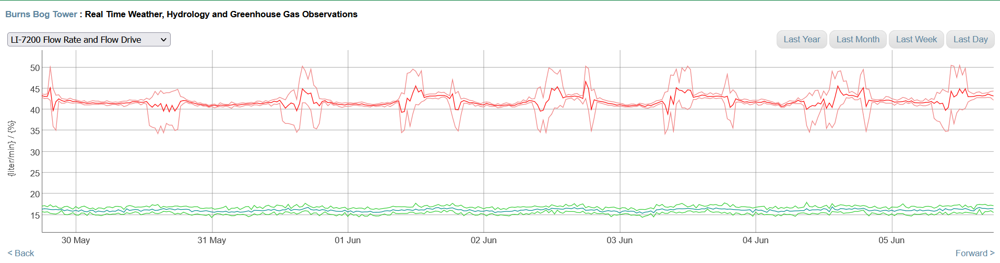
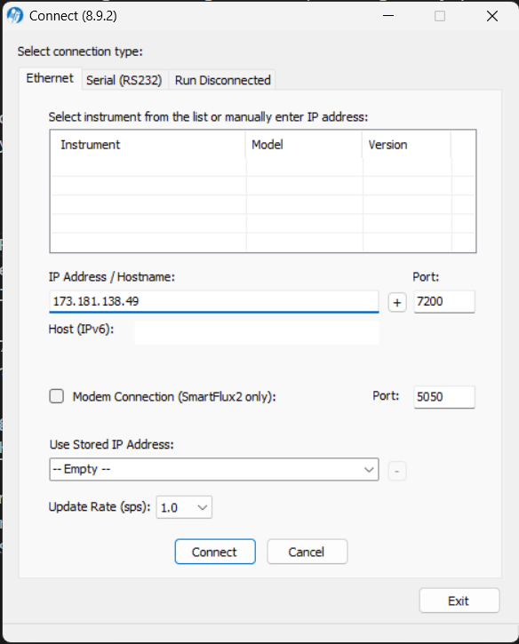
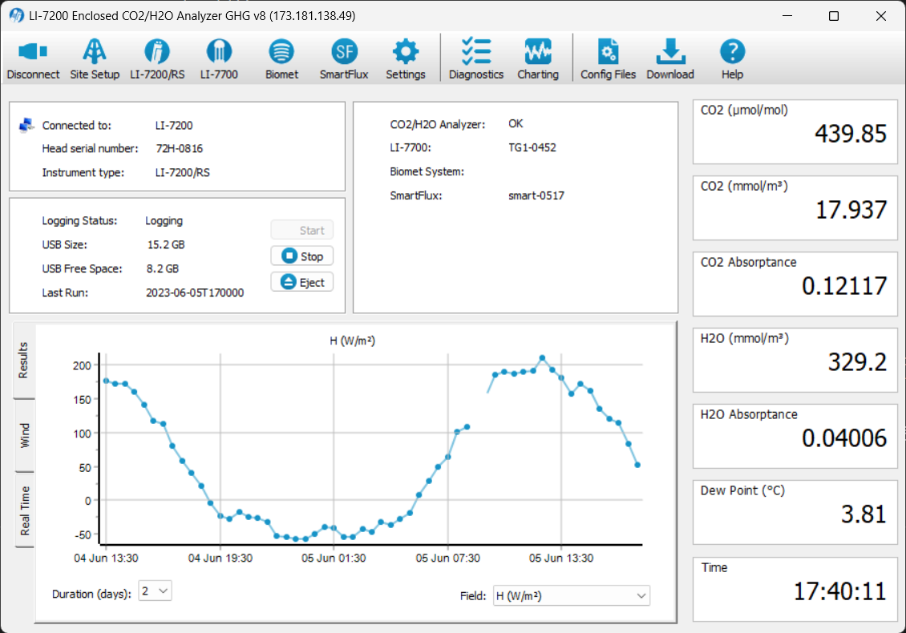

Daily Site Monitoring
Below are instructions for visual checks of the data that should be done every day. Web plots for each site can be found by going to:
You also view data plot on vinimet (or your local computer if it’s set up) using ‘view_micromet’ in Matlab.
Check Critical Variables
Motor Power (%) & Flow Fate for LI-7200 pump
- Keep checking if this one changes over time (over weeks).
- Flow drive % should be 50 - 90%
- Higher power means more air-flow resistance in the tubing indicating either clogged up filter (if we use those), dirty rain cap wire-mesh or damaged tubing
- We aim for 30-min averages flow rate of slpm = 15 L/min;
- Below 13 L/min we begin to worry, (data quality drops);
- Below 10 L/min we need to fix it ASAP (data quality questionable or data missing) by cleaning up the intake tube cap

Thermocouples
- LI-7200: these two values should be very close to each other (<1 C difference)
- In (t_in_LI_7200)
- Out (t_out_LI_7200)
- LI-7700
- Air temperature
Climate Data
- Check if there are new data & if the values are reasonable (for all sites)
- Click on “last day” / “last week” to filter the time series
- If you see BB1 and BB2 precip data don’t align with each other, there’s a possibility that the tipping bucket is clogged.
Flux Data
For Fluxes and Gas Concentrations check if there are new data & if the values are reasonable. These will only be calculated if smart flux is running properly.
Gas Concentrations:
- CO2 mixing ratio (dry) - during daytime should be around 380-420 ppm (umol/mol), during night time it can be quite high depending on the site (sometimes > 600 ppm)
- CH4 mixing ratio (dry) - should be around 2 ppm
Fluxes:
- Sensible & Latent heat - Typically between -100 and + 450 w m-2
- Should generally sum ~ 70%-80% of net radiation
- FCO2 & FCH4 - site dependent, but look for gaps, extreme spikes, systematic jumps
Signal strength
- View over a longer period to check for any trends. Schedule a site visit if it’s decreasing rapidly (<10%). It’s normal for 7700’s signal strength to drop during rainy periods, but it’s not normal for 7200’s to drop that frequently (if it does, check the 7200 head’s o-ring).
Voltage
- Look at data over the past month and tell June or Rick if the battery voltage goes below 24 V at midnight.
- This usually happens in the winter when we have a few days of clouds & rain.
Remote Login Procedures
Connect to VPN, go to Remote Desktop & connect to vinimet.geog.ubc.ca (or it’s better to do this from your personal computer so you won’t kick off or get kicked off by other people using Vinimet). Note that doing this on your personal computer requires a PC.
LI 7200
Open the LI-7x00 software on desktop and connect using the right IP Address

- Once on the main page check:
The logger status → should be logging
USB Free Space → make sure there’s still enough space in the USB (usually the USB stick can handle 6-weeks data)
The SmartFlux module has to be connected to the system, make sure it’s not “none”
Head pressure - should be between -0.8 to -3.8 kPa
Flow drive - should be around 50% to 90%
Flow rate - should be around 13-15 l/m

Click on the “Diagnostics” tab - check if all parameters are “OK”
LI 7700
Open the LI-7700 software on desktop and use the same IP address as for the 7200
Check 7700 Optics RH. If it’s >15%, we should replace the internal chemicals.
- Check SmartFlux internal memory every 2-3 months
- Instructions to check memory are under
Note_SmartFlux internal memory_ssh connection.docx - Instructions to clear memory are under
Note_SmartFlux internal memory_updater.docx
- Instructions to check memory are under
Info from here